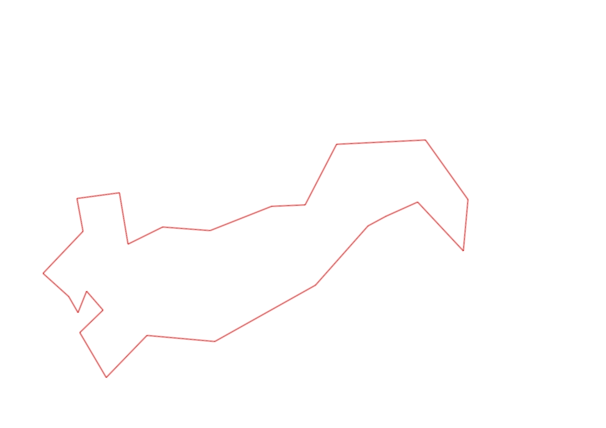
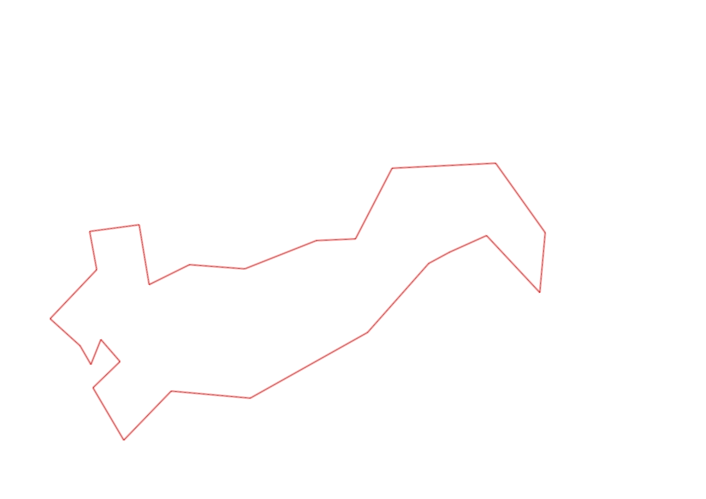

| Control |
Points |
Time Punched |
Distance |
Your Time |
Pace |
Place |
Fastest Time |
Median Time |
% Behind Fastest |
| 126 |
20 |
|
0.17 |
0:01:08 |
06:39 |
7 / 10 |
0:00:43 |
0:00:53 |
58% |
| 130 |
30 |
|
0.14 |
0:00:46 |
05:28 |
15 / 19 |
0:00:00 |
0:00:33 |
-% |
| 63 |
60 |
|
0.18 |
0:01:30 |
08:20 |
5 / 5 |
0:01:13 |
0:01:18 |
23% |
| 32 |
30 |
|
0.15 |
0:00:55 |
06:06 |
12 / 27 |
0:00:36 |
0:00:56 |
52% |
| 44 |
40 |
|
0.12 |
0:02:11 |
18:11 |
19 / 29 |
0:00:52 |
0:01:49 |
151% |
| 53 |
50 |
|
0.2 |
0:01:58 |
09:50 |
10 / 26 |
0:01:31 |
0:02:15 |
29% |
| 69 |
60 |
|
0.12 |
0:01:14 |
10:16 |
11 / 29 |
0:00:45 |
0:01:18 |
64% |
| 71 |
70 |
|
0.06 |
0:01:07 |
18:36 |
10 / 25 |
0:00:48 |
0:01:13 |
39% |
| 54 |
50 |
|
0.08 |
0:00:32 |
06:40 |
2 / 33 |
0:00:27 |
0:00:45 |
18% |
| 41 |
40 |
|
0.09 |
0:01:43 |
19:04 |
7 / 13 |
0:01:01 |
0:01:43 |
68% |
| 40 |
40 |
|
0.11 |
0:00:52 |
07:52 |
7 / 24 |
0:00:45 |
0:01:00 |
15% |
| 77 |
70 |
|
0.18 |
0:02:21 |
13:03 |
10 / 21 |
0:01:35 |
0:02:21 |
48% |
| 59 |
50 |
|
0.21 |
0:03:17 |
15:38 |
13 / 18 |
0:02:00 |
0:02:47 |
64% |
| 61 |
60 |
|
0.24 |
0:03:25 |
14:14 |
12 / 19 |
0:02:14 |
0:03:16 |
52% |
| 37 |
30 |
|
0.4 |
0:04:34 |
11:25 |
3 / 6 |
0:03:20 |
0:04:58 |
37% |
| 48 |
40 |
|
0.28 |
0:05:15 |
18:45 |
4 / 5 |
0:04:03 |
0:04:43 |
29% |
| 64 |
60 |
|
0.07 |
0:01:26 |
20:28 |
13 / 14 |
0:00:38 |
0:01:05 |
126% |
| 49 |
40 |
|
0.12 |
0:03:14 |
26:56 |
11 / 12 |
0:00:55 |
0:01:28 |
252% |
| 46 |
40 |
|
0.23 |
0:03:22 |
14:38 |
7 / 8 |
0:02:06 |
0:02:39 |
60% |
| 52 |
50 |
|
0.18 |
0:02:14 |
12:24 |
2 / 3 |
0:01:56 |
0:02:14 |
15% |
| 109 |
100 |
|
0.26 |
0:03:28 |
13:20 |
8 / 9 |
0:01:20 |
0:02:00 |
160% |
| 123 |
20 |
|
0.31 |
0:03:32 |
11:23 |
7 / 10 |
0:01:36 |
0:02:50 |
120% |
| 47 |
40 |
|
0.24 |
0:03:30 |
14:35 |
3 / 6 |
0:02:32 |
0:03:41 |
38% |
| 92 |
90 |
|
0.12 |
0:03:12 |
26:40 |
5 / 10 |
0:01:21 |
0:03:13 |
137% |
| Finish |
0 |
|
0.23 |
0:02:16 |
09:51 |
2 / 6 |
0:01:41 |
0:05:45 |
34% |
Total Distance Covered: 4.49km
Points Scored: 1180
Late Penalty: 0
Final Score: 1180
Total Time: 0hours 59minutes 2seconds
Efficiency: 262.81 points/km
 
